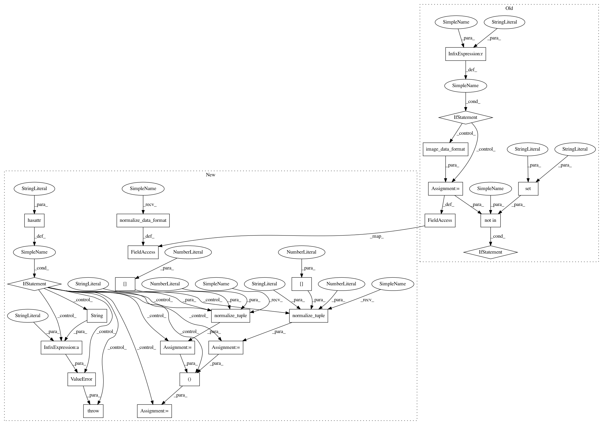

023331ec2a7b0086abfc81eca16c84a1692ee653,keras/layers/convolutional.py,ZeroPadding3D,__init__,#ZeroPadding3D#Any#Any#,1625
Before Change
def __init__(self, padding=(1, 1, 1), data_format="default", **kwargs):
super(ZeroPadding3D, self).__init__(**kwargs)
if data_format == "default":
data_format = K.image_data_format()
self.padding = tuple(padding)
if data_format not in {"channels_last", "channels_first"}:
raise ValueError("data_format must be in {"channels_last", "channels_first"}.")
self.data_format = data_format
self.input_spec = [InputSpec(ndim=5)]
def get_output_shape_for(self, input_shape):
After Change
def __init__(self, padding=(1, 1, 1), data_format=None, **kwargs):
super(ZeroPadding3D, self).__init__(**kwargs)
self.data_format = conv_utils.normalize_data_format(data_format)
if isinstance(padding, int):
self.padding = ((padding, padding), (padding, padding), (padding, padding))
if hasattr(padding, "__len__"):
if len(padding) != 3:
raise ValueError("TODO")
dim1_padding = conv_utils.normalize_tuple(padding[0], 2,
"1st entry of padding")
dim2_padding = conv_utils.normalize_tuple(padding[1], 2,
"2nd entry of padding")
dim3_padding = conv_utils.normalize_tuple(padding[2], 2,
"3rd entry of padding")
self.padding = (dim1_padding, dim2_padding, dim3_padding)
else:
raise ValueError("`padding` should be either an int, "
"a tuple of 3 ints "
"(symmetric_dim1_pad, symmetric_dim2_pad, symmetric_dim3_pad), "
"or a tuple of 3 tuples of 2 ints "
"((left_dim1_pad, right_dim1_pad),"
" (left_dim2_pad, right_dim2_pad),"
" (left_dim3_pad, right_dim2_pad)). "
"Found: " + str(padding))
self.input_spec = [InputSpec(ndim=5)]
def get_output_shape_for(self, input_shape):
if self.data_format == "channels_first":
In pattern: SUPERPATTERN
Frequency: 3
Non-data size: 24
Instances
Project Name: keras-team/keras
Commit Name: 023331ec2a7b0086abfc81eca16c84a1692ee653
Time: 2017-02-09
Author: francois.chollet@gmail.com
File Name: keras/layers/convolutional.py
Class Name: ZeroPadding3D
Method Name: __init__
Project Name: keras-team/keras
Commit Name: 023331ec2a7b0086abfc81eca16c84a1692ee653
Time: 2017-02-09
Author: francois.chollet@gmail.com
File Name: keras/layers/convolutional.py
Class Name: ZeroPadding3D
Method Name: __init__
Project Name: keras-team/keras
Commit Name: 023331ec2a7b0086abfc81eca16c84a1692ee653
Time: 2017-02-09
Author: francois.chollet@gmail.com
File Name: keras/layers/convolutional.py
Class Name: Cropping3D
Method Name: __init__
Project Name: keras-team/keras
Commit Name: 023331ec2a7b0086abfc81eca16c84a1692ee653
Time: 2017-02-09
Author: francois.chollet@gmail.com
File Name: keras/layers/convolutional.py
Class Name: Cropping2D
Method Name: __init__